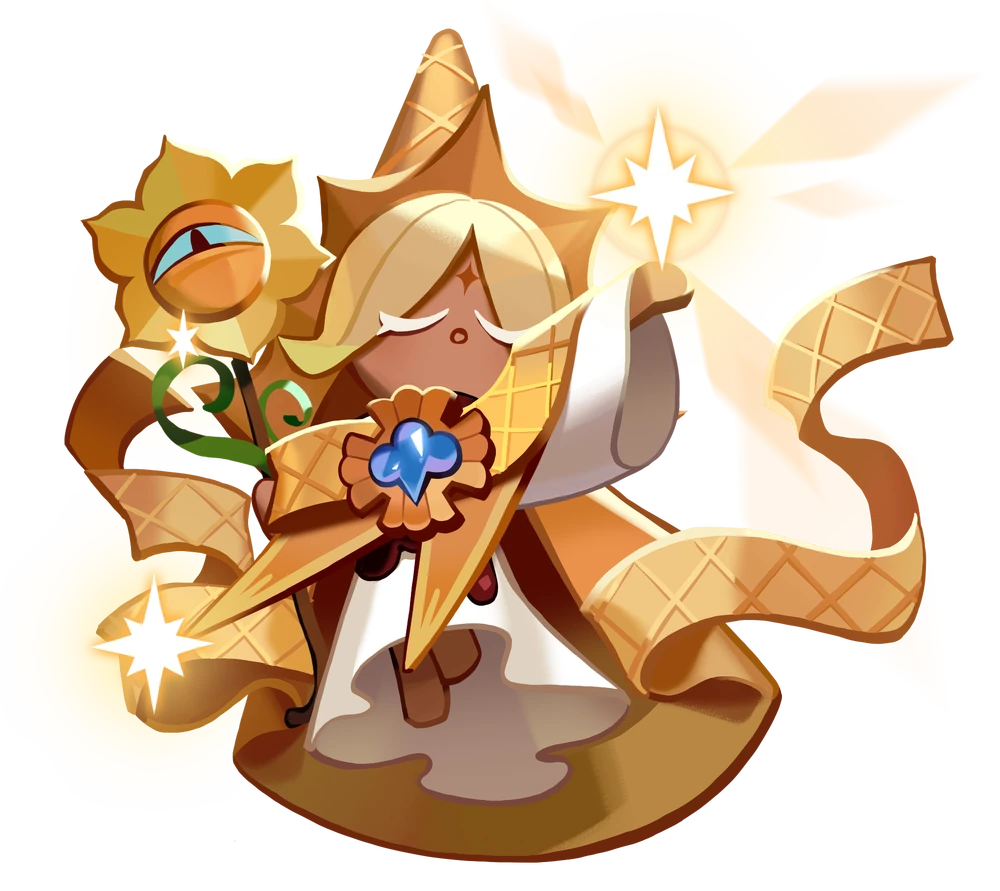
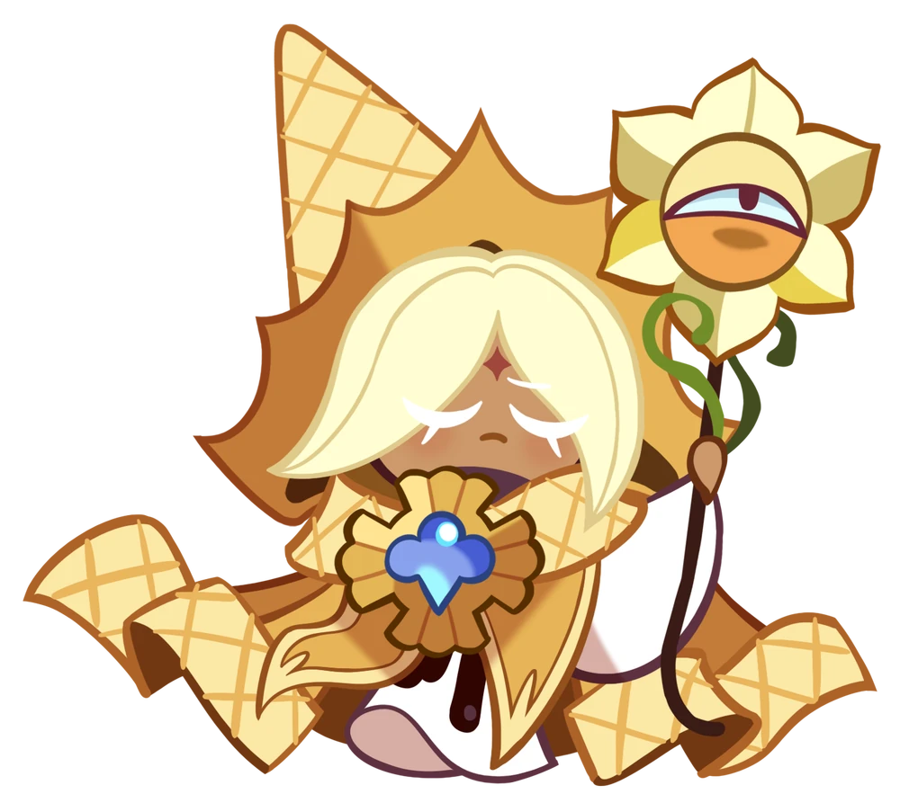
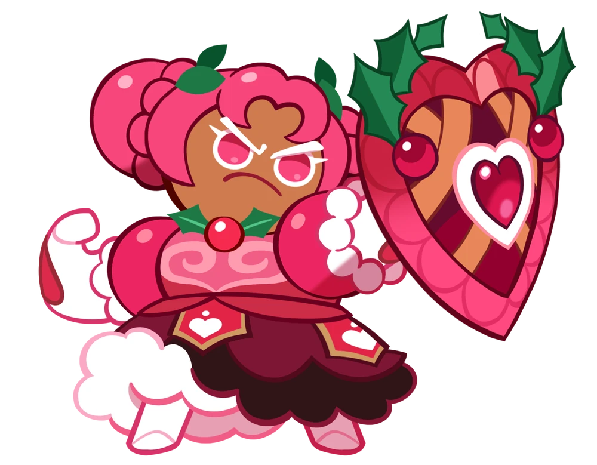
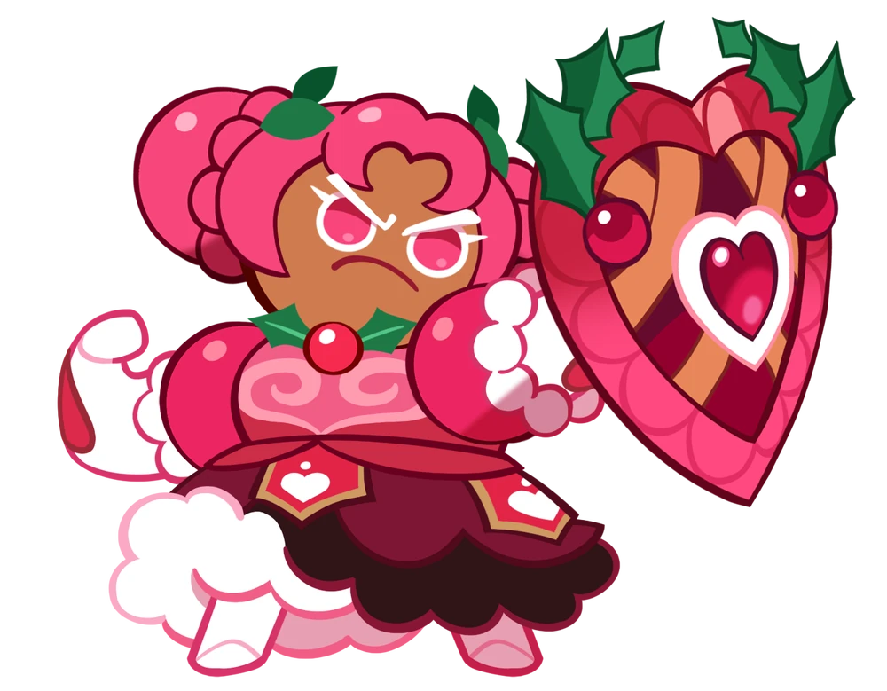
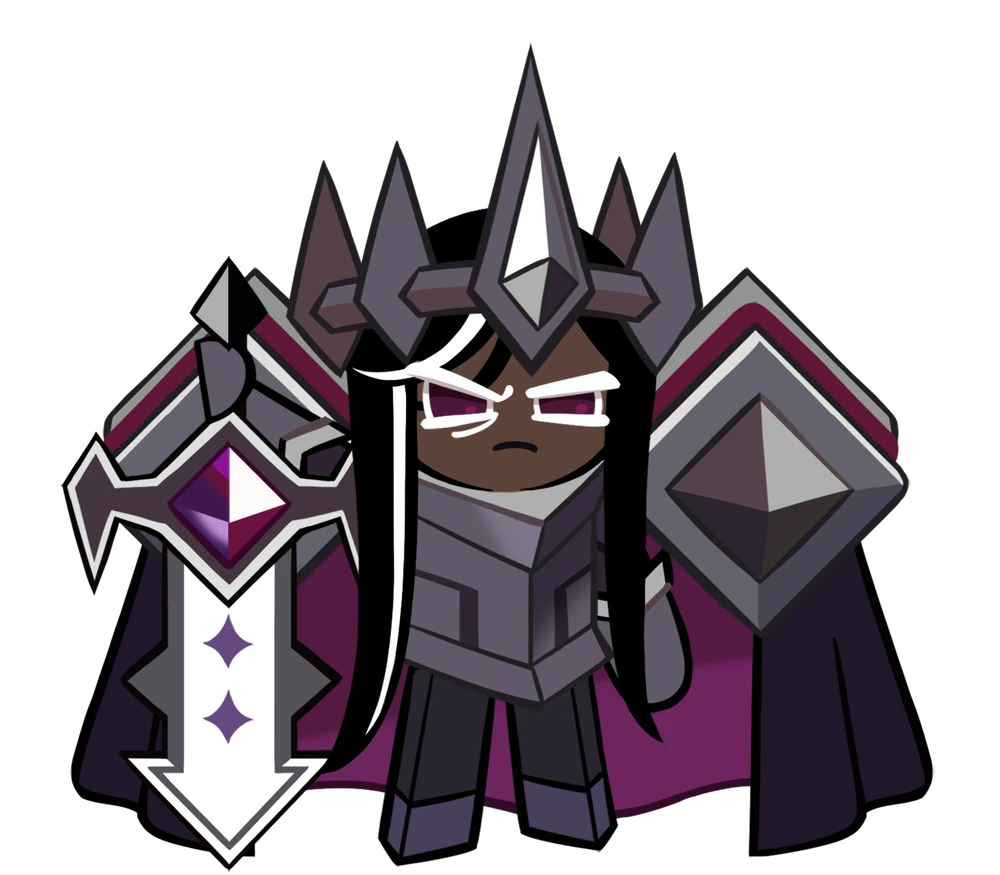
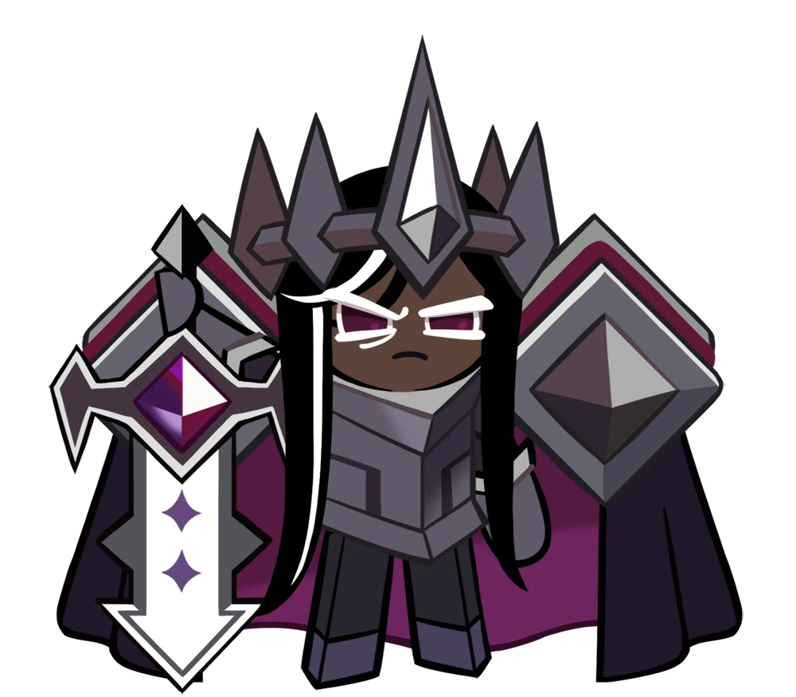
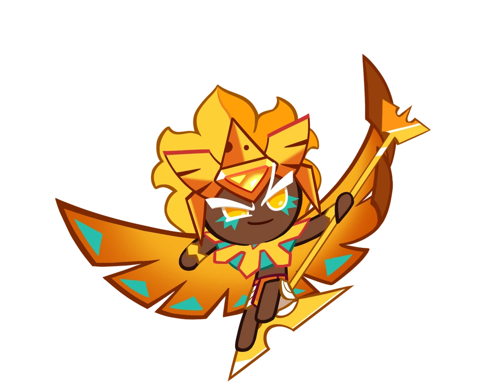
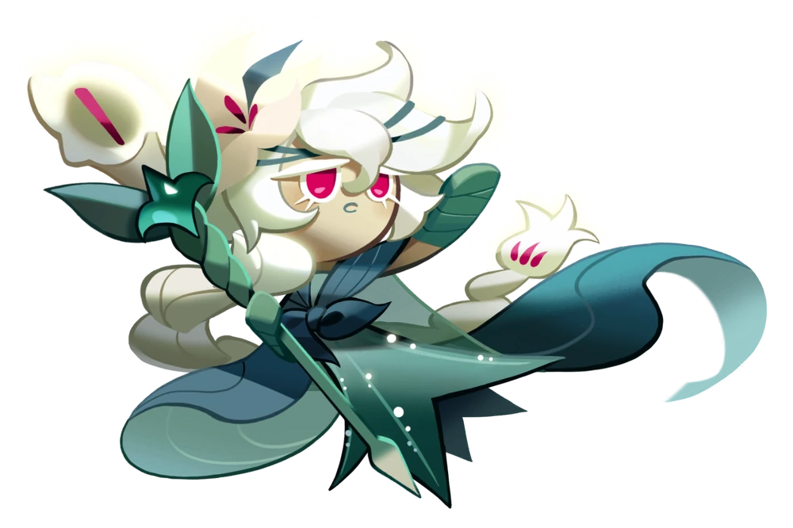
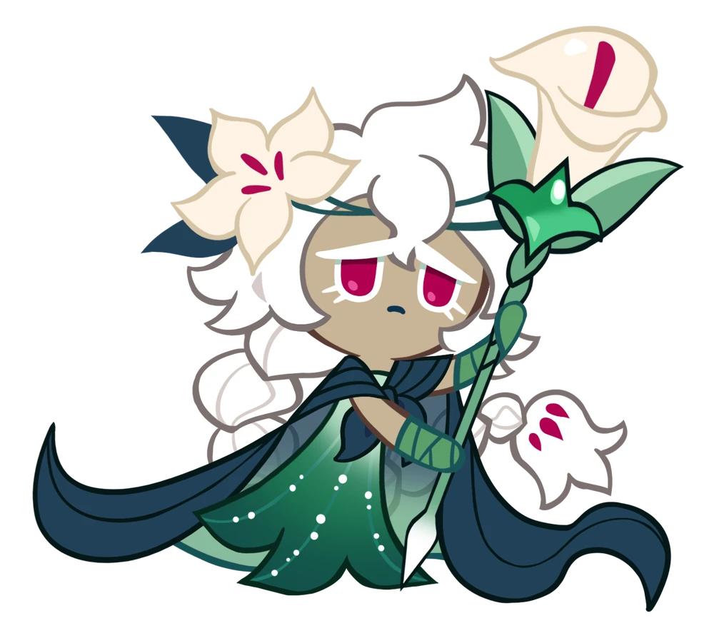

| IMAGES | DESCRIPTION | CLASS | SKILL |
|---|---|---|---|
|   | "There are not many Cookies on Earthbread who could inspire hope as Pure Vanilla Cookie did. Born from nature-blessed cream and a fragrant vanilla bean, he was the epitome of Cookie kindness and faithfulness. Pure Vanilla Cookie strived to forgive the wrongdoer and heal the wounds of Cookies and animals alike. Though a powerful wielder of magic, he would use his spells not for his own good, but for the good of everyone. The Cookie took an arduous pilgrimage down the Sugar-Free Road. What Pure Vanilla Cookie learned through the Trials is unknown, but crowned with a bright halo of light he returned to found the Vanilla Kingdom, a land of freedom and learning, and a beacon for those seeking love and peace. Pure Vanilla Cookie stood by his friends until the very end, warding off the Darkness with a heartfelt smile." |
Healing Rear |
Love & Peace 15 sec |
 

|
"What else could result in such an overwhelming passion if not the reddest hollyberries, ripened under the hottest summer sunlight? Hollyberry Cookie believes that every friendship, like victory, should be triumphant. After all, there's nothing in the word as hard as trust! Not even the all-enduring Hollyberry Shield with which she swore to protect her beloved ones. It is said that Hollyberry Cookie leading a charge onto the battlefield is the most inspiring view. A view that inspires to repay with trust to those who put trust in you." |
Front |
Oath on the Shield 17 sec |
 

|
"The last bean, devoid of any sweetness, fell down from a withered branch of a lonely cacao tree growing above the edge of a cliff. Lying there in frozen soil, enduring snow and wind, this bean wasn't aware of its destiny to become the main ingredient for the cold and reclusive Dark Cacao Cookie. A warrior of unheard strength, Dark Cacao Cookie wielded the Grapejam Chocoblade. This sword was so heavy it required three average Cookies to even budge it. With each swing, the skies erupted into thunder and lightning, avalanches tumbled down countless mountains. Dark Cacao Cookie was known as a Cookie of few words but great principle. After the Dark Flour War's sorrowful events, the warrior locked himself away in the solitude of his own castle... Will anything be able to melt his frozen soul once again?" |
Front |
Solemn Judgment 13 sec |
|  | "Worship the Ever-Radiant Sovereign of the Golden City! Golden Cheese Cookie dwells in a gilded palace amidst the dunes of the Parmesan Desert. Cookies fall to their knees in exultation at the glimpse of her—body adorned with shining gold, godlike confidence, and magnificent wings. A mere flick of her wrist forms a golden mountain, another, a river—powers only a god can wield. Her greed knows no bounds, as this Cookie yearns for more to call her own, from treasures to even her faithful subjects. Following her desires, Golden Cheese Cookie filled the kingdom with riches, flowing freely like cheese fondue. She could’ve had it all: her eternal kingdom, the pinnacle of opulence and bliss. If it weren’t for that fated day, that is..." |
Middle |
Brilliance of the Absolute 13 sec |
|   | "A solitary beam of moonlight shines in the twilight. Like a pale lily touched by the gentle drops of rain, a Cookie silently entered the world. Her petals might look soft, and her dough frail, but nothing could stop her steps as she explored every corner of Earthbread, seeking a safer and happier future for all Cookiekind. Alas, at the end of her journey, all she found was the dark truth of this world. That truth painted her faith and curiosity with despair and anger, awakening a terrifying darkness deep within. Will White Lily Cookie find her lost voice once again amidst the deafening silence? With a seed of hatred and despair in her heart, will she walk towards the light once more?" |
Bomber Middle |
Lily Bud 15 sec |